ワイヤーフレーム
ワイヤーフレーム作成方法
本サイトのワイヤーフレームは、ユーザーがサービス内容を理解しやすく、 体験予約までスムーズに進める導線設計を目的として作成した。 ワイヤーフレーム作成では、サイトマップで整理したページ構造を基に、 ユーザーの行動を想定しながら情報の優先度を整理し、セクションの配置を決定している。
特に本サイトは「体験型サービス」のため、ユーザーが 「体験内容の理解 → 体験イメージの形成 → 信頼性の確認 → 予約行動」 という流れで情報を認識することを想定し、この順序に沿ってコンテンツを配置した。
■ ワイヤーフレーム設計の方針
- ページ上部でサービスの概要を提示し、サイトの目的を瞬時に理解できるようにする
- コース内容を比較しやすいレイアウトにすることで、ユーザーの選択を容易にする
- 体験の流れを視覚的に提示し、初めてのユーザーでも参加イメージを持てるようにする
- レビューやFAQを掲載し、ユーザーの不安や疑問を解消する
- 複数箇所にCTA（予約ボタン）を配置し、ユーザーが任意のタイミングで予約できる導線を作る
■ ワイヤーフレーム作成手順
- サイトマップを作成し、各ページに必要な情報を整理する
- トップページに掲載する情報要素を抽出する
- ユーザーの閲覧行動を想定し、情報の優先順位を決定する
- スマートフォン版を基準としてレイアウトを設計する
- PC版では比較や一覧性を高めるレイアウトに調整する
■ トップページの基本構成
本サイトのトップページは、ユーザーがサービスを理解し予約まで進める導線を意識し、 以下の構成で設計している。
- ヘッダー（サイトナビゲーション）
- ヒーローセクション（サービス概要と予約CTA）
- コース紹介（12種類コース / 20種類コースの比較）
- 予約フロー
- 体験の流れ
- 体験者レビュー
- よくある質問（FAQ）
- フッター（サイト情報・利用規約など）
このような構成にすることで、ユーザーがサービス内容を段階的に理解し、 最終的に予約行動へ自然に移行できるページ設計としている。
トップページ
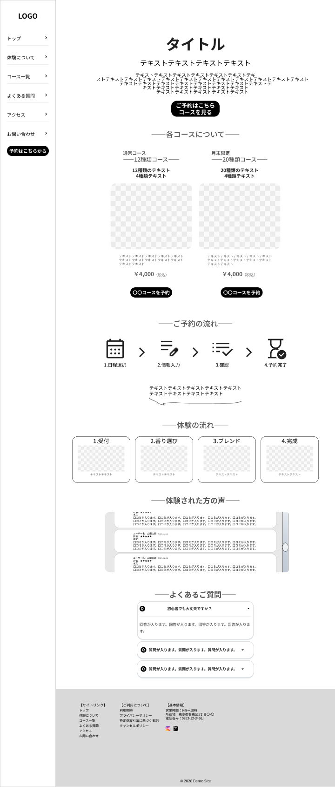
ヒーローセクション
【配置理由】ページ訪問時に最初に目に入る部分のため、サービス概要と予約導線を配置した。
【ユーザー効果】ユーザーが体験内容を瞬時に理解でき、興味を持った場合すぐに予約行動へ進むことができる。
コース紹介（12種類 / 20種類）
【配置理由】サービスの中心となるコース内容を比較しやすくするため、ヒーロー直後に配置した。
【ユーザー効果】コースの違いを視覚的に理解でき、自分に合った体験コースを選びやすくなる。
予約フロー
【配置理由】コース内容を理解した後に予約手順を提示することで、予約方法を分かりやすくするため。
【ユーザー効果】予約までの手順が明確になり、ユーザーの心理的ハードルを下げることができる。
体験の流れ
【配置理由】実際の体験工程を紹介することで、サービス内容を具体的に伝えるため。
【ユーザー効果】体験のイメージを持ちやすくなり、参加への不安を軽減できる。
レビュー
【配置理由】体験者の評価を掲載し、サービスの信頼性を高めるため。
【ユーザー効果】第三者の意見を確認できるため安心感が生まれ、予約行動につながりやすくなる。
FAQ
【配置理由】ユーザーが抱きやすい疑問を解消するため、ページ終盤に配置した。
【ユーザー効果】疑問点を事前に解決できるため、予約前の不安を減らすことができる。
フッター
【配置理由】サイト情報や補足リンクをまとめて表示するため、ページ下部に配置した。
【ユーザー効果】営業時間や所在地などの基本情報を確認でき、サイトの信頼性向上につながる。
下層ページ
【12種類ブレンド体験ページ】
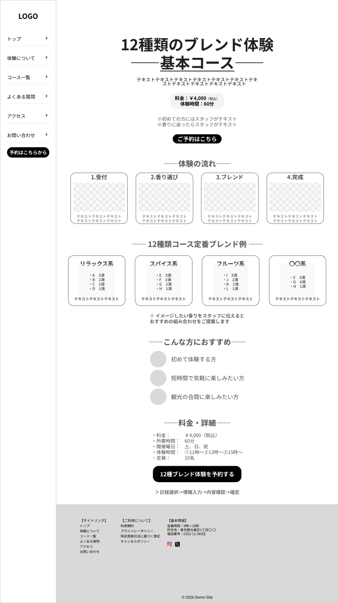
配置意図：基本コースである12種類ブレンド体験の内容を分かりやすく紹介するページです。 体験の流れやブレンド例を掲載することで、初めての方でも体験内容を具体的にイメージできるようにしています。 ページ下部には予約ボタンを配置し、内容を理解したユーザーがそのまま予約できる導線を設けています。
【20種類ブレンド体験ページ】
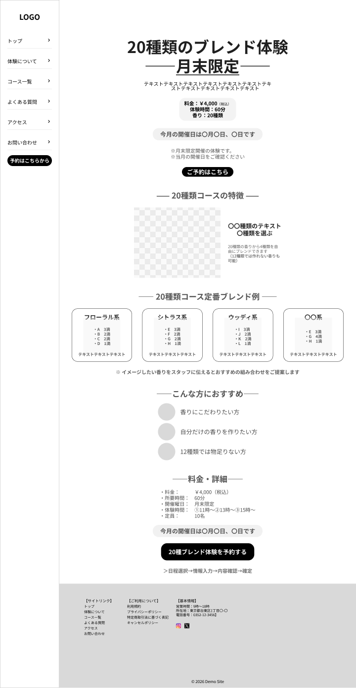
配置意図：月末限定で開催される20種類ブレンド体験の魅力を紹介するページです。 12種類コースとの違いや、より多くの香りを組み合わせられる特徴を伝えることで、 香りにこだわりたいユーザーの興味を引く構成にしています。 開催日情報も分かりやすく掲載し、参加を検討しやすくしています。
【よくある質問ページ】
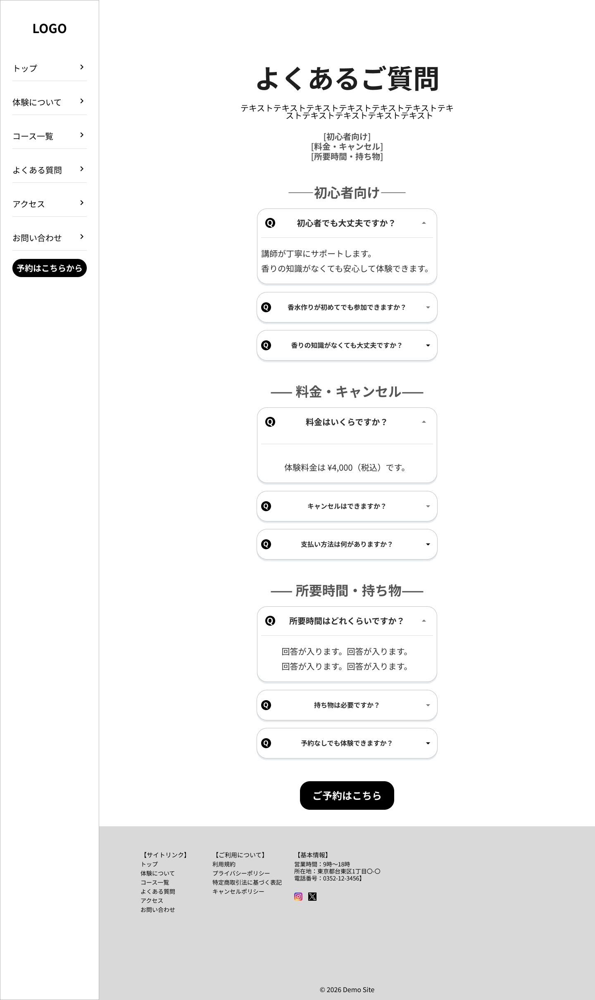
配置意図：体験前にユーザーが抱きやすい疑問をまとめて解決できるページです。 初めての方でも安心して参加できるよう、料金、体験時間、持ち物などの質問を分かりやすく整理しています。 これによりユーザーの不安を解消し、予約につながりやすくします。
【アクセスページ】
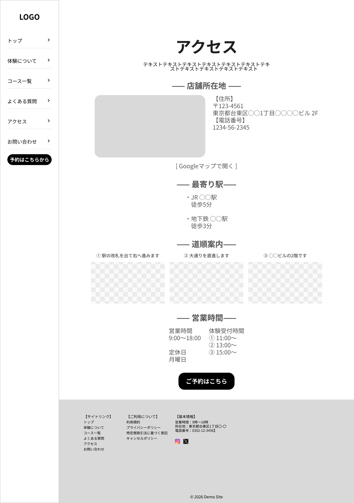
配置意図：店舗へのアクセス方法を分かりやすく案内するページです。 地図や所在地、営業時間を掲載することで、来店前に必要な情報を確認できるようにしています。 ユーザーが安心して来店できるよう配慮した構成となっています。
【お問い合わせページ】
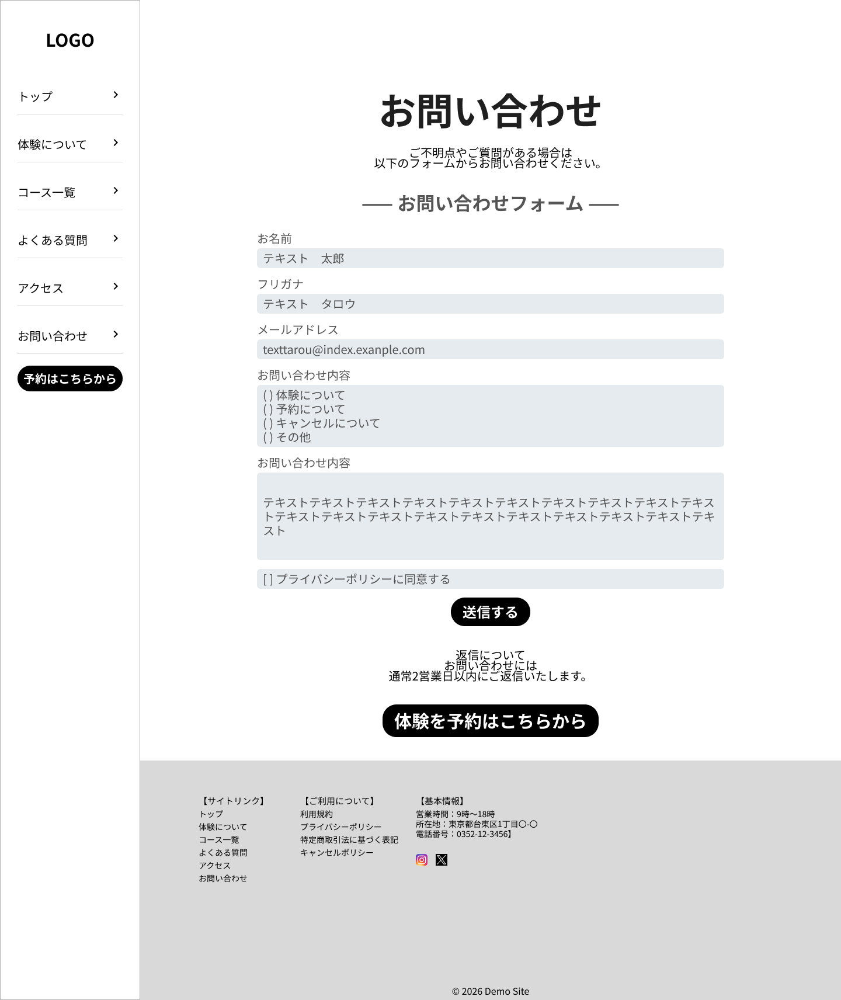
配置意図：ユーザーからの質問や相談を受け付けるためのページです。 シンプルな入力フォームにすることで、ユーザーが気軽に問い合わせできるようにしています。 体験内容や予約について不明点がある場合でも、簡単に問い合わせできる環境を整えています。
【ユーザー導線】
本サイトでは、ユーザーがサービス内容を理解したうえで自然に予約へ進めるよう導線を設計しています。 ユーザーの基本的な行動フローは以下の通りです。
トップページ
↓
コース比較（12種類 / 20種類）
↓
コース詳細ページ
↓
予約ページ
↓
予約完了
また、体験内容に不安があるユーザーに対しては、FAQページやお問い合わせページを通じて疑問を解消できる導線を用意しています。 これにより、ユーザーが安心して体験予約へ進めるサイト構造としています。
Webアプリケーション画面
本Webアプリケーションでは、ユーザーがスムーズに体験予約を行えるよう、 「コース選択」から「予約完了」までを段階的に進める予約フローを設計しています。 各画面の上部にはステップ表示を配置し、現在の進行状況をユーザーが直感的に把握できるようにしています。 これにより、入力の負担を軽減しながら予約完了まで自然に誘導するUI構成としています。
コース選択画面
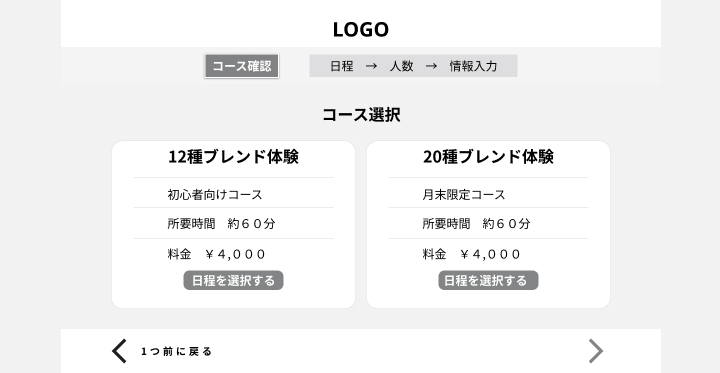
ユーザーが体験コースを選択する画面です。 コース名、コース説明、所要時間、料金をカード形式で表示し、 複数のコースを比較しながら選択できるレイアウトとしています。 PC版ではコースカードを横並びに配置することで視認性を高め、 ユーザーが直感的にコースを選択できる設計としています。
日程選択画面
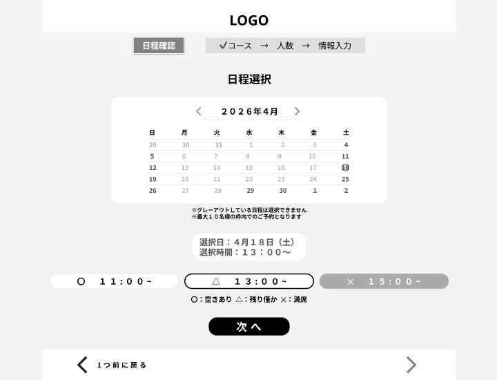
体験予約の日付と時間を選択する画面です。 カレンダー形式で予約可能日を表示し、選択可能な日付と選択できない日付を 視覚的に区別できるようにしています。 また、時間帯ごとの空き状況を「空きあり」「残りわずか」「満席」で表示することで、 ユーザーが予約可能な時間を一目で判断できる設計としています。
人数選択画面
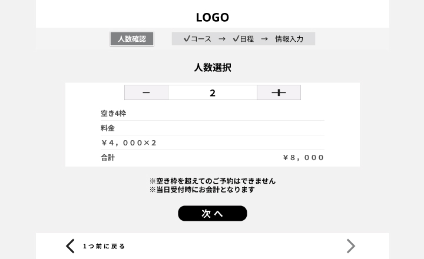
予約人数を設定する画面です。 人数は「＋」「−」ボタンで簡単に変更できるUIを採用し、 直感的な操作で人数調整ができるようにしています。 また、空き枠数を表示することで、予約可能人数をユーザーに明確に伝えるとともに、 料金の合計金額を自動計算して表示することで、予約内容を確認しながら進められる設計としています。
情報入力画面
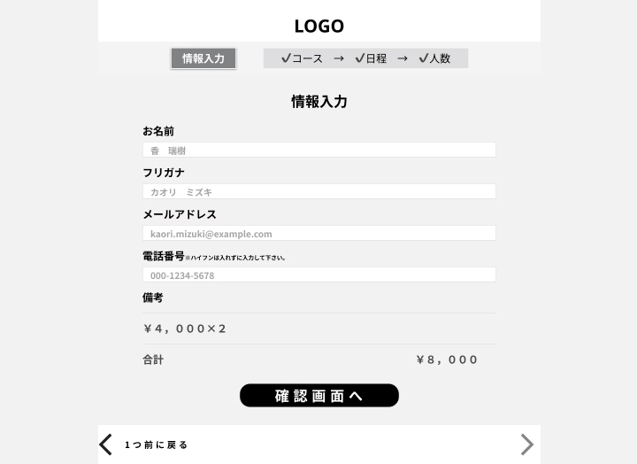
予約者の情報を入力する画面です。 入力項目は「お名前」「フリガナ」「メールアドレス」「電話番号」「備考」とし、 フォームを縦並びに配置することで入力しやすいレイアウトにしています。 また、入力画面下部には予約料金の確認欄を設け、 ユーザーが予約内容を把握した状態で次の確認画面へ進める構成としています。
予約内容確認画面
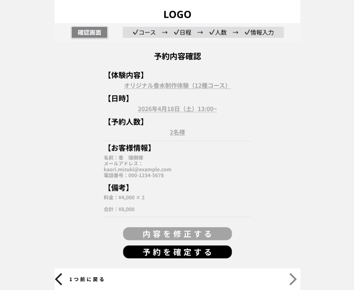
入力した予約内容を最終確認する画面です。 体験内容、日時、予約人数、予約者情報、料金などを整理して表示することで、 ユーザーが内容を確認しやすい構成としています。 また、「内容を修正する」と「予約を確定する」の操作ボタンを配置し、 必要に応じて入力内容の修正または予約確定が行えるようにしています。
予約完了画面
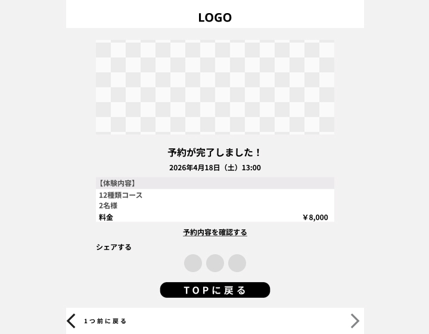
予約手続きが正常に完了したことをユーザーに伝える画面です。 予約日時および予約内容の概要を表示し、予約が確定したことを明確に示します。 また、予約内容の再確認やSNSでのシェア導線を設けることで、 ユーザー体験の向上および体験情報の拡散にもつながる設計としています。 最後に「TOPに戻る」ボタンを配置し、サイトのトップページへ戻れるようにしています。
スマートフォン版
【トップページ】
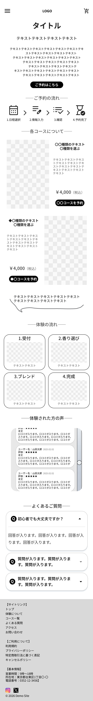
【12種類ブレンド体験ページ】
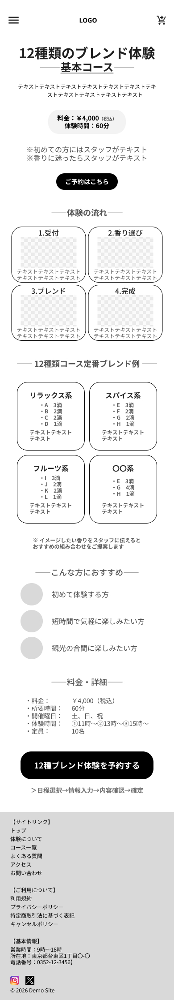
【20種類ブレンド体験ページ】
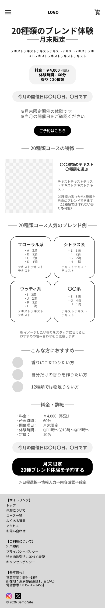
【よくある質問ページ】
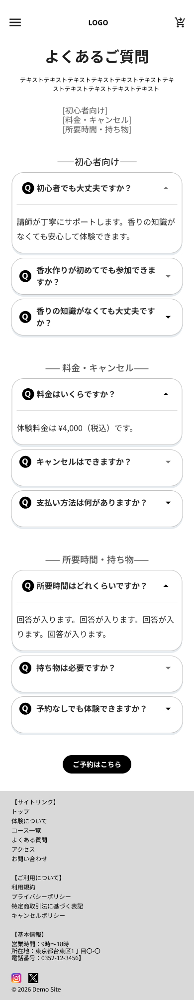
【アクセス】
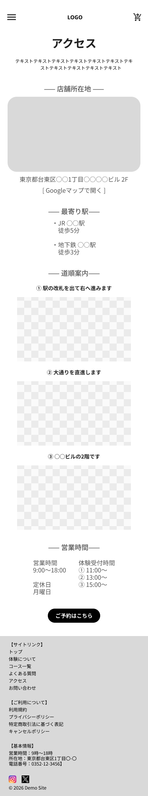
【お問い合わせページ】
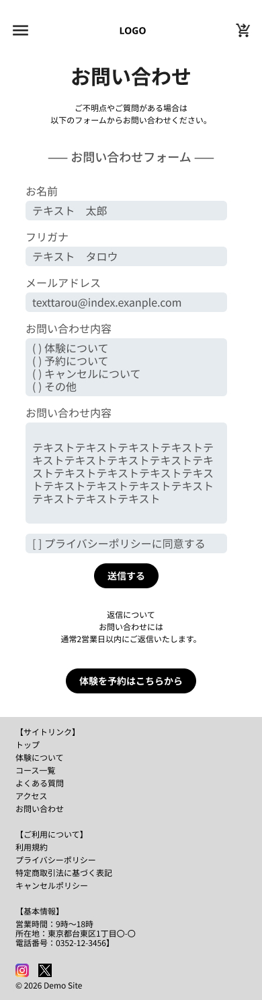